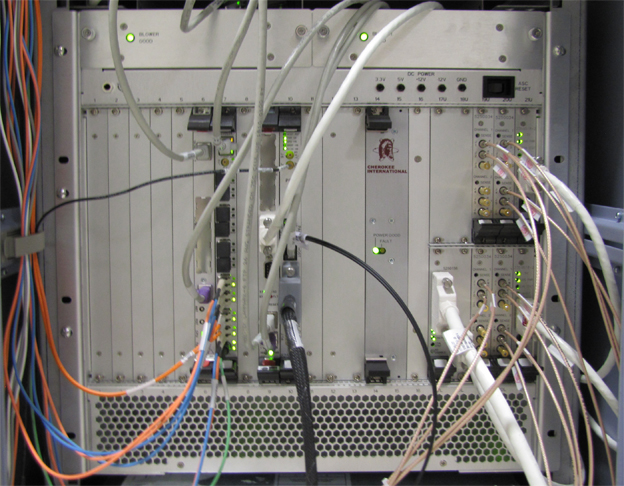

Operating Documentation
Direction 5670006, Rev# 1
Discovery MR750w GEM Service Methods
Module Version 14.0, Version Date 10/17/11
Operating Documentation |
Combined ASC and MGD Chassis - combines the MGD and ASC functionality into one chassis. See the MGD Chassis or ASC Chassis for the detailed board functionality. The CAM Chassis differences to the MGD and ASC chassis are described in this help document.
Amplifier Support Controller - provides the Narrow and Broadband RF Amplifier interface (Control signals) and RF Power Monitoring. See the ASC help pages for more details. Boards in the ASC Chassis remain on the CAN network. There is no direct bus communication between ASC and MGD components.
Multi-Generational Data acquisition chassis - consists of components that generate the timed control signals necessary to control the MR imaging system under the direction of the imaging sequence (pulse sequence). These control signals drive the gradient output, RF output, as well as gate the RF receive window. Details of the circuit board functionality is described later.
Permits RS-232C serial connection to each of the processor boards (AGP, SCP, HEC) and the PSE board by utilizing the existing Ethernet link.
16 to 24 port gigabit Ethernet switch that provides a network path between the Host computer and the ICNs, CAM processors, HEC, and the Term Server. This network path is used for application download to the controllers, including the downloading of PSDs to the CAM. It is also used for serial communication between the host and the two (2) CAM processor boards and the PSE board.

Illustration 1: CAM Boards - Front View

| Slot(s) Number | Board Name |
|---|---|
| From Left to Right | |
| 1-5 | Spare slots |
| 6 | Application Gateway Processor 2 (AGP2) Processor Board |
| 7 | IXG Board |
| 8 | Spare slot or optional ERF Board |
| 9 | Scan Control Processor 3 (SCP3) Board |
| 10-11 | PSE Board (slot 10) and optional PSE I/O Board (slot 11) |
| 12-13 | Spare slot or Power Supply 2 (see Note below) |
| 14-15 | Power Supply 1 |
| 16 | Spare slot |
| 17u-18u | Reserved for MNS IF Board |
| 17L-18L | NB Amp I/F Board |
| 19u-19L | NB Amp Detector Board, Body Channel 2 (slot 19u) and optional MNS Board (slot 19L) |
| 20u-20L | NB Amp Detector Board, Head Channel (slot 20u) and Body Channel 1 (slot 20L) |
| 21u-21L | Processor Board |
| NOTE: | For additional information about the RF Detector Board, RF Processor Board, NB IF Board, and BB IF Board, see Universal Power Monitor (UPM) Troubleshooting. |
| NOTE: | For the latest CAM Chassis revisions, the second power supply (Slots 12-13) is not necessary. |
The CAM circuit boards are located on the front of the chassis. All slots on the rear of the CAM are spare slots.
All boards connect to a common midplane and interface through a common compact Peripheral Component Interface (PCI) bus. Exercise care when replacing or installing circuit boards in the CAM Chassis in order to avoid bending the small pins located on the midplane. Before installing or replacing a board into an empty slot, visually inspect the connectors on the midplane for bent pins. Also, check the female connector on the board for signs of damage before attempting to seat the board into the slot. The slots are keyed to prevent the insertion of an incompatible board.
The CAM is cooled by two fans located behind the metal cover plate at the top-front of the CAM Chassis. The internal temperature of the CAM is monitored by two independent temperature sensors. Sensor 1 will report an over-temp condition when the temperature in the chassis reaches 40° C (104° F). Sensor 2 will report an over-temp condition when the temperature in the chassis reaches 50° C (122° F).
To load applications, the following boards must be installed in the CAM Chassis: Applications Gateway Processor (AGP) Board, Scan Control Processor (SCP) Board, Power Supply (PS) 1. These boards must be installed in the correct slots with all the necessary cabling attached. If the software application fails to load or boot after software installation, and the CAM boards are installed and connected correctly, use “cu” (serial connection) or “rlogin” (Ethernet) to login to each of the boards and monitor them for suspicious failures during TPS reset.
| NOTE: | To remove the IXG and PSE boards: Retract the two screws that secure the boards to the CAM Chassis, and press the inset gray tabs inward to release the black chassis clips. Failure to release the clips first will damage them. |
Connectors on the IXG board are used as follows on a standard (non-MNS) 750w system:
Table 1: Standard 750w System - IXG Board Connectors
| Label | Function |
| J11 | Narrow band exciter |
| J12 | GMC Board |
| J13 | Receiver 1 |
| J14 | Receiver 2 |
| J15, J16, J17, J18, J19, J20 | Not used |
| J8 | 80 MHZ reference clock from exciter |
Connectors on the IXG board are used as follows on a 750w system with the MNS option installed:
Table 2: 750w System with MNS Option - IXG Board Connectors
| Label | Function |
| J8 | 80 MHZ reference clock from ERF Board J9 |
| J11 | Narrow band exciter |
| J12 | GMC Board |
| J13 | MNS exciter |
| J14 | To ERF Board J14 |
Connectors on the ERF board are used as follows on a 750w system with the MNS option installed:
Table 3: 750w System with MNS Option - ERF Board Connectors
| Label | Function |
| J8 | 80 MHZ reference clock from exciter |
| J9 | To IXG Board J8 |
| J10 | Receiver 1 |
| J11 | Receiver 2 |
| J12, J13 | Not used |
| J14 | To IXG Board J14 |
The Application Gateway Processor (AGP) board provides an interface between the Host application used to prescribe a sequence and real-time functions of the system that play out RF gradient waveforms prescribed by the sequence. The AGP provides two RJ45 connectors to interface with the Host PC. The top connector provides an Ethernet link between the Host and the AGP. During a TPS Reset, data is transferred to the AGP via this link. The bottom connector provides a service RS-232 serial link between the AGP and the Host via the Term Server.
Available Diagnostics for Testing the AGP Board:
AGP and SCP Board Level Diagnostics: AGP
Host Datapaths: Ping -> AGP
The primary functions of the IXG Board are:
80 MHZ reference clock optical input
Synchronous Synchronizer data transfer
Asynchronous PCI data transfer
Local capture of RRx header/footer/sample data
4 SFP optical transceiver modules with Digital Diagnostic Monitoring Interface (DDMI)
Scan room door interface
CAM clock distribution - 20MHz for PSE
20MHz sequence bus interface
CAM chassis temperature sensor monitoring
Front panel LED indicators
Diagnostics available for the IXG Board include IXG Board Level Diagnostics and PSE to IXG Datapath.
Table 4: LEDs on IXG Board
| Mnemonic | Function | Functional Description |
| PWR OK | Power Good | Turns green when power is applied to the board |
| REF OK | Reference Clock OK | Turns green when the reference clock signal is detected |
| G_STAT | Master Gradient Status | Turns green when all axis controllers report ready and the gradient subsystem is in the ready state |
| HB | XGP NIOS Heartbeat | Turns green when communication with XGP is active |
| J11 RDY | dvmrlink Interface Link Up | Turns green when DVMR link is active |
| J12 RDY | dvmrlink Interface Link Up | Turns green when DVMR link is active |
| J13 RDY | dvmrlink Interface Link Up | Turns green when DVMR link is active |
| J14 RDY | dvmrlink Interface Link Up | Turns green when DVMR link is active |
The Scan Control Processor (SCP) board controls the sequencing of the scan state. The SCP also provides an interface between the System Sequence Control (SSC) subsystem and the peripheral hardware in the Patient Handling Subsystem. This interface is implemented over a CAN communication link to the Scan Room Interface (SRI) board and allows the SSC Subsystem to control and monitor the peripheral hardware, scan time display, and physiological interface.
The SCP provides two RJ45 connectors to interface directly with the Host PC. The top connector provides an Ethernet link between the Host and the SCP via the network switch. During a TPS, Reset data is transferred to the SCP via this link. The bottom connector provides a service RS-232 serial link between the SCP and the Host via the Term Server. The DB-9 connector provides the CAN port for the CAN Communication Link between the SCP and the SRI.
Available Diagnostics for Testing the SCP:
AGP and SCP Board Level Diagnostics: SCP
SRI Datapaths: SRI SCP Loop Test
CAM Datapaths: SCP -> CAN
Host Datapath Diagnostics: Ping -> SCP
The primary functions of the PSE Board are:
Scan sequence playout
Digital pulse sequence waveform generation
Oblique plane image rotation
Real-time B0 eddy current compensation
Physiological gating algorithms
Physiological waveform display generation
Physiological Acquisition Controller (PAC) interface
Auxiliary physiological waveform interface
PC waveform/hardkey serial interface
Host serial interface
Trigger interfaces
Diagnostics available for the PSE Board include PSE Board Level Diagnostics.
Table 5: LEDs on PSE Board
| LED | Name | Functional Description |
| DS1 | Host Reset | Indicates CPLD has detected a host reset event. Caused by either the host serial interface or the chassis reset pushbutton. LED will remain on as long as either host reset source is active (host RX line held low, or pushbutton held down) |
| DS2 | Power OK | On indicates all power rails are good |
| DS3 | SPU Heartbeat | Heartbeat LED indicating the SPU processor is running |
| DS4 | WARP Heartbeat | Heartbeat LED indicating the WARP processor is running |
| DS5 | NIOS Heartbeat | Heartbeat LED indicating the NIOS processor is running |
Early versions of the CAM Chassis included two power supply modules. The latest version includes only one power supply module. Both versions of the CAM Chassis are equivalent.
The power supply module provides power to the CAM Chassis. The output voltage this board provides cannot be adjusted. During normal operation the green POWER SUPPLY LED will be illuminated. Some types of power supply failures will cause the red FAULT LED to illuminate. Test points next to each LED provide a convenient measurement location for checking the condition of each supply voltage with a Digital Multimeter.
The ASC Reset Switch, located at the upper right of the CAM Chassis, resets the boards in the ASC section of the CAM Chassis (slots 17 through 21). If there is a fault associated with the boards in these slots, pressing and releasing this switch may clear the fault.
The Term Server is physically located next to the Ethernet Switch. The Term Server permits RS-232C serial connection to each of the processor boards and the PSE Board by utilizing the existing Ethernet link. Serial ports are selected at the Term Server based on the information received in the Ethernet signal. The serial lines on the Term Server are connected as follows: Port 1 connects to the HEC, Port 2 connects to the AGP, Port 3 connects to the SCP, and Port 4 connects to the Host serial reset port on the PSE Board. Except for the TPS Reset that happens as part of a system reboot, Port 4 is required to complete a manual TPS Reset from the Host. The Ethernet cable from the Term Server can connect to any open port on the Ethernet Switch.
The Network Switch is either a 16 or 24 port gigabit Ethernet switch. The status of each port is indicated by a set of LEDs viewable on the front of the switch. The LEDs indicate link activity, and link speed. Some models also show whether the communication is full or half duplex. In normal operation, each link with an Ethernet cable connected should show Link Activity and the Power LED should be lit/active. The Ethernet lines can be connected to any of the ports in any order. Connections can be swapped between any of the ports for troubleshooting.